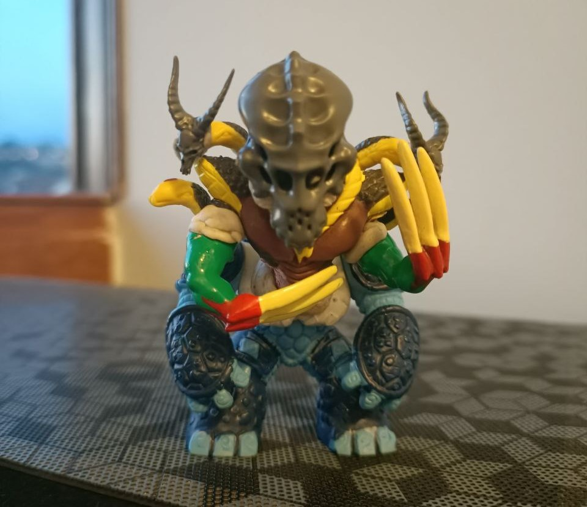
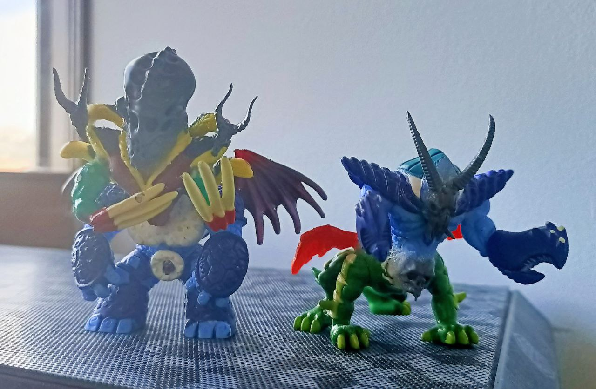
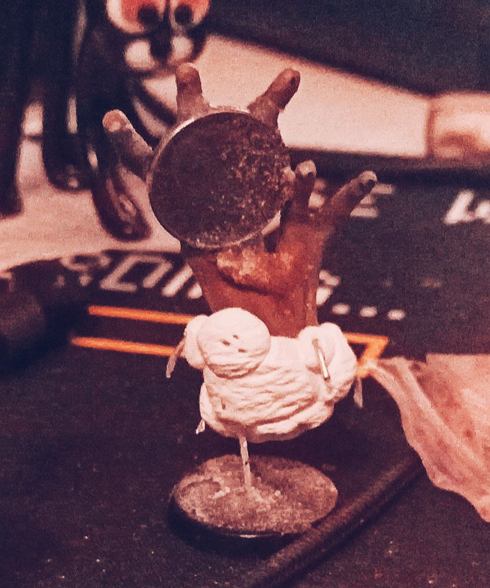
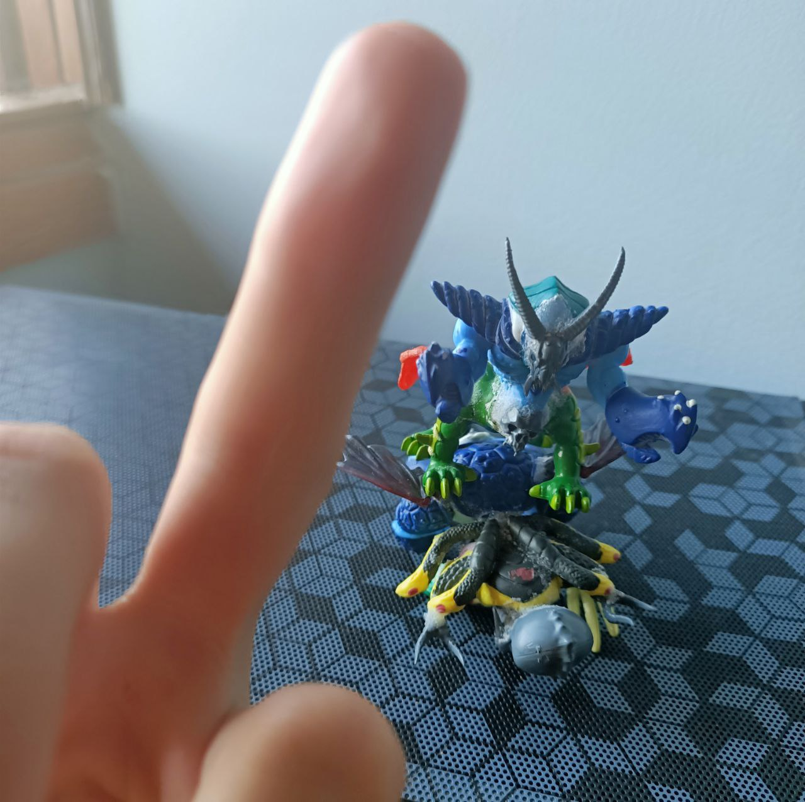

⏪ go back
👹How to kitbash your own forgotten cryptid!👹
do you like my sculptures? No?? Well try to make one better than mines!
making a forgotten cryptid is "easy", just be careful when cutting stuff!
what you'll need:
- superglue
- baking soda (or superglue activator if you are fancy)
- old toys, miniatures, thingies
- nippers
- exacto knife
- poster putty or whatever it's called
- a well ventilated area
- (optional) a box of citadel skulls if you like skulls
- (optional) something flat to use as a base
- (optional) epoxy resin (milliput, green stuff...)
step 1): cut stuff

it started as a sort of shinigami thingy full of skulls (i like skulls)...
you can start with a simple idea, some reference or with nothing at all!
Grab your toys and use their pieces to form interesting shapes. You can cut them and hold everything together with poster putty, but don't glue anything yet!
Experiment with different heads, bodies, legs... take photos of EVERYTHING, pick the best ones, ask for suggestions and be ready for the next step!
step 2): glue stuff

it was starting to feel lonely so i kitbashed a friend!!!
at this point you'll probably hate poster putty enough to forget how annoying superglue is to work with!
apply superglue, wait for the pieces and your fingers to bond together and sprinkle some baking soda to fill the gaps!
you could sand the baking soda later, or keep it as 🌟free texture🌟
you can also glue your cryptid on a flat base, cover it in superglue and sprinkle some more baking soda to make a cool earth effect!
(optional) step 3): sculpt stuff

it looks like a battlefield, it's just kitbashing™
if some gaps were too big for the super-baking-glue-soda-combo, you can fill them with epoxy resin!
Also you could sculpt some extra-details to make your mini even more cooler!
That's it!

i know this tutorial looks like draw the rest of the fucking howl but it's a very subjective art form! Just try it and have fun!
⏪ go back